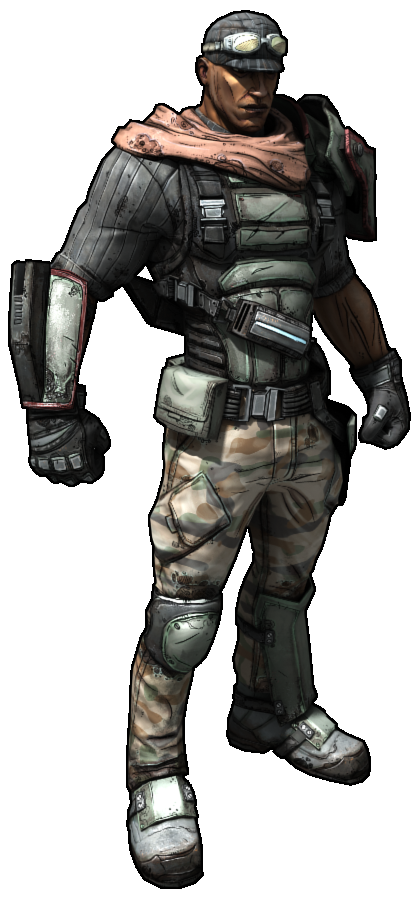

Lilith
Max, 3:08 p.m. Apr 2, 2018

Лилит — одна из шести Сирен, женщин с необычайными способностями и сверхъестественными силами.
Mordecai
Andrii, 12:11 a.m. Apr 8, 2018
Мордекай – бывалый авантюрист-одиночка. После открытия Хранилища он тесно сотрудничает с Алыми налетчиками.
Roland
John, 4:54 a.m. May 01, 2018
До событий первой части Роланд был сержантом в Алом копье, где он командовал 114-м "Отрядом Хвастунов".
Brick
Joshua, 6:17 p.m. May 11, 2018
Стиль игры Берсерка очевиден — ближний бой и взрывчатка. Также персонаж неплохо орудует дробовиками.
Maya
Stephanie, 5:43 p.m. May 23, 2018
Майа - одна из сирен–женщин, обладающих необычными способностями. На левом бедре носит книгу – модификатор класса.
Zer0
Lily, 7:34 p.m. Jun 4, 2018
Зер0 – наемный убийца. В основном он получал заказы на политических деятелей. После одного задания он решает найти себе более сложную задачу.
Gaige
Mary, 8:15 p.m. Jul 2, 2018
Гейдж была обычной студенткой с планеты Eden-5. Первоначально она задумывала Жестокуса (D374-TP) как проект для научной ярмарки.
Krieg
Mary, 8:15 p.m. Jul 2, 2018
Криг – результат эксперимента корпорации Гиперион. Страдает раздвоением личности: первая личность – сам Криг, вторая – Безбашенный псих.
Salvador
Mary, 8:15 p.m. Jul 2, 2018
Сальвадор заинтересовался поисками Хранилища после того, как услышал, насколько это опасно. Он решил, что это то что надо, и отправился на поиски.
Last comments

Алекс Картошка

Никита Мастер
Мария Изюм

Илья Курага